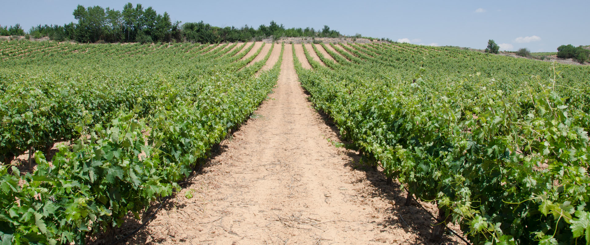

Nuestra Historia
El Viñedo de Luis
Un Sueño que se Convirtió en Realidad
En un pequeño pueblo rodeado de montañas y campos fértiles, existía un joven llamado Luis que tenía una pasión innata por el vino. Desde niño, Luis observaba con fascinación cómo su abuelo cultivaba uvas en su modesto viñedo. Cada verano, la familia se reunía para la cosecha y, con el tiempo, Luis se enamoró del arte de la vinificació
Después de terminar sus estudios, Luis decidió viajar por las regiones vinícolas más famosas del mundo, desde la Toscana en Italia hasta la región de Napa Valley en California. Durante sus viajes, Luis trabajó en diferentes bodegas, aprendiendo los secretos de los maestros vinicultores y perfeccionando sus habilidades. Sin embargo, siempre sintió un fuerte deseo de regresar a sus raíces y aplicar todo lo aprendido en su propio viñedo.
En 2010, con una combinación de ahorros, préstamos y el apoyo incondicional de su familia, Luis compró una parcela de tierra cerca de su pueblo natal. Con dedicación y esfuerzo, plantó sus primeras vides, seleccionando cuidadosamente variedades que prosperarían en el clima y el suelo de la región. Así nació "El Viñedo de Luis".
Desde el principio, Luis se comprometió a producir vinos de alta calidad, combinando técnicas tradicionales con innovaciones modernas. Cada botella de vino que produce es un reflejo de su amor por la tierra y su pasión por el vino. El viñedo se ha convertido en un símbolo de excelencia y tradición, donde cada vendimia es una celebración de la vida y la familia.
Hoy en día, "El Viñedo de Luis" es conocido por sus vinos excepcionales que capturan la esencia de la región. La bodega ha recibido numerosos premios y reconocimientos, pero para Luis, el mayor logro es ver a sus clientes disfrutar de sus vinos y compartir momentos especiales con sus seres queridos.
La historia de "El Viñedo de Luis" es una historia de perseverancia, pasión y amor por la viticultura. Es un testimonio de cómo un sueño puede convertirse en realidad con trabajo duro, dedicación y un poco de tierra fértil.
